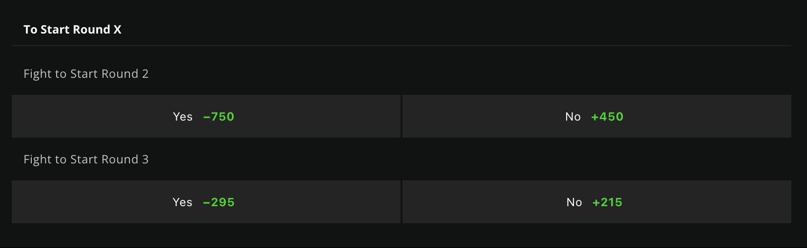

The preset calculator has options tailored to sport-specific pregame polls. Just select the sport from the dropdown at the top and fill it out like you would with the normal calculator.
2-Way:
This is the standard calculator for calculating expected value (EV) on any two-option poll.
Show Real Odds: Check this box only if the poll in the real app displays odds (e.g., MLB winner polls). Leave it unchecked if no odds are shown.
Show Advanced Calculations: This one is up to you. Enable it if you want to see deeper calculations like hit probability and payout breakdown.
Sportsbook Odds: Enter the odds exactly as they appear on your sportsbook (e.g., FanDuel). The calculator will convert them to no-vig (fair) odds automatically.
Real Odds: Enter the odds shown in the actual app for each team or side. Be sure to match the correct team to the correct input box.
Max Bet: Hold your wager in the app to see the max karma allowed on that poll.
In parentheses next to this is the payout for a “0” wager.
Use payout 5 for player polls. Use payout 10 for regular game polls (if no 0-wager payout is shown, default to 10).
3-Way:
This works the same way as the 2-way calculator but is specifically built for FC (Fantasy Contests), where three choices are possible.
Dog of the Day (DOTD):
You have two ways to use this calculator: Manual Entry or Auto-Ranker.
Manual:
Placement: Rank the selections by percent picked: 1st highest = 1, 2nd highest = 2, and so on. If two picks have the same percent, use the number in parentheses to break the tie.
Real Odds: Use the odds shown next to each team in the DOTD selection screen.
Sportsbook Odds: Manually input odds from your sportsbook. Check the no-vig box if your book displays no-vig odds. Make sure the underdog (DOTD pick) and favorite are in the correct boxes.
Skip the auto-ranker section if you’re entering everything manually.
Auto-Ranker:
iphone section
Take a screenshot of the DOTD screen (Ex. below)
Go into photos and copy and paste the text as you would usually do
Copy and paste this text into the input box and follow directions on site
dm @tomfc on Real if you have any issues/questions
Other section (Android or Laptop)
Take a screenshot of the DOTD screen (see ex. in iphone section)
Attach this screenshot to Chatgpt and tell it to convert this image to text in the following format:"Enter players and odds (one per line, alternating name and odds)"
Copy and paste this text into the input box and follow directions on site
dm @tomfc on Real if you have any issues/questions
Once all data is filled in, hit “Use Data for EV Calculator”.
Then enter sportsbook odds for each team. Use the no-vig checkbox if needed. Double-check which input is for the underdog and which is for the favorite.
Once everything is entered, press “Calculate All” to see a summary of:
Top payout
Highest hit probability
Best expected value
Click “Show Complete EV Rankings” to view all teams sorted by EV.
⚠️ TIP: Do DOTD close to the first game start time, as selection percentages can change.
PSP Calculator:
Estimate placement by ranking the sportsbook odds for the prop.
Example:
Player 1: -120
Player 2: +230
Player 3: +150
Placement would be: Player 1 (1), Player 3 (2), Player 2 (3).
Use an American Odds to Implied Probability calculator to help with this.
Next, enter each player’s sportsbook odds.
Pool Calculator:
Select how many games are in the pool (2–4).
If it’s FC, select the version marked with _ games fc.
First input = sportsbook odds
Second input = percent selected (must pick a side to see this)
L = left side, R = right side. Match them correctly.
By default, the table sorts by EV. You can also sort by payout, hit probability, or selection %.
Note: A positive EV is good long-term. But for 3-game pools, it is highly unlikely it will ever be worth entering.
Selections and payouts are estimates, but very accurate.
Golf and PSP Calcs:
Use the guides found on each respective page.
UFC Round Calculator
Use the toggle buttons at the top to switch between 5 and 3 round fights
There is a specific type of prop used for this: called "To Start Round X", found on DraftKings

Then follow the instructions on the page for inputting odds.